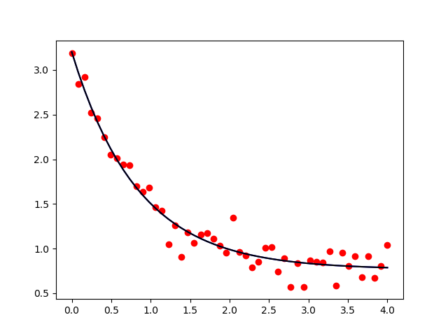

Note
Click here to download the full example code
Fit Specifying a Function to Compute the Jacobian¶
Specifying an analytical function to calculate the Jacobian can speed-up the fitting procedure.
import matplotlib.pyplot as plt
import numpy as np
from lmfit import Minimizer, Parameters
def func(pars, x, data=None):
a, b, c = pars['a'], pars['b'], pars['c']
model = a * np.exp(-b*x) + c
if data is None:
return model
return model - data
def dfunc(pars, x, data=None):
a, b = pars['a'], pars['b']
v = np.exp(-b*x)
return np.array([v, -a*x*v, np.ones(len(x))])
def f(var, x):
return var[0] * np.exp(-var[1]*x) + var[2]
params = Parameters()
params.add('a', value=10)
params.add('b', value=10)
params.add('c', value=10)
a, b, c = 2.5, 1.3, 0.8
x = np.linspace(0, 4, 50)
y = f([a, b, c], x)
data = y + 0.15*np.random.normal(size=x.size)
# fit without analytic derivative
min1 = Minimizer(func, params, fcn_args=(x,), fcn_kws={'data': data})
out1 = min1.leastsq()
fit1 = func(out1.params, x)
# fit with analytic derivative
min2 = Minimizer(func, params, fcn_args=(x,), fcn_kws={'data': data})
out2 = min2.leastsq(Dfun=dfunc, col_deriv=1)
fit2 = func(out2.params, x)
Comparison of fit to exponential decay with/without analytical derivatives to model = a*exp(-b*x) + c
print('''
"true" parameters are: a = %.3f, b = %.3f, c = %.3f
==============================================
Statistic/Parameter| Without | With |
----------------------------------------------
N Function Calls | %3i | %3i |
Chi-square | %.4f | %.4f |
a | %.4f | %.4f |
b | %.4f | %.4f |
c | %.4f | %.4f |
----------------------------------------------
''' % (a, b, c,
out1.nfev, out2.nfev,
out1.chisqr, out2.chisqr,
out1.params['a'], out2.params['a'],
out1.params['b'], out2.params['b'],
out1.params['c'], out2.params['c']))
Out:
"true" parameters are: a = 2.500, b = 1.300, c = 0.800
==============================================
Statistic/Parameter| Without | With |
----------------------------------------------
N Function Calls | 44 | 14 |
Chi-square | 0.8974 | 0.8974 |
a | 2.4327 | 2.4327 |
b | 1.1946 | 1.1946 |
c | 0.7669 | 0.7669 |
----------------------------------------------
and the best-fit to the synthetic data (with added noise) is the same for both methods:
Total running time of the script: ( 0 minutes 0.108 seconds)